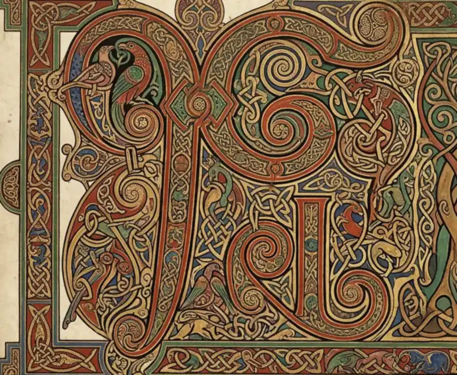
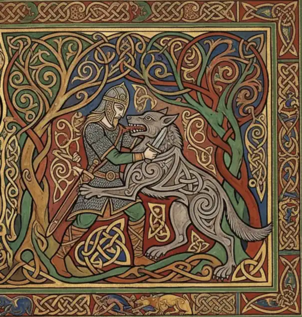

Tongues, Scripts, Names and Verse · Finrod Felagund in the pits of Tol-in-Gaurhothi

Finrod Felagund in the pits of Tol-in-Gaurhoth
SUPPLIED. The owner's plate, made with an AI tool, published on his own standing authorisation — on his word, not on a licence the file carries. The archive cropped, turned and recoloured it to this leaf. No generator is named: none was named to us. the archive's own record
A·iFinrod
Volume V · The opening of this volumeii
Finrod Felagund in the pits of Tol-in-Gaurhoth
One wide incipit page in the Kells manner: a huge interlaced display monogram fills the left two-thirds; a small historiated vignette at the upper right shows a mailed figure grappling a grey wolf among interlace trees. Red lead, ochre and green throughout, with corner bosses on the border. No gutter fold (measured trough depth 16.9).
What the corpus attests
SCENE ATTESTED, RENDERING DIVERGES. Finrod slays the werewolf that came to devour Beren -- Silmarillion ch. 19. But the text has him chained, unarmoured, killing it with hands and teeth, and dying of the wounds. This plate arms him and gives him a sword. That is a departure and it is recorded as one, not smoothed over.
Why this volume
Volume V is Tongues, Scripts, Names and Verse -- 'how they spoke and wrote'. Two reasons, and both are in the texts. The contest of Finrod and Sauron is fought AS SONG: 'he chanted a song of wizardry' (Silmarillion ch. 19), the only duel in the legendarium decided by verse. And Finrod is Felagund, a name given him by the Dwarves -- Volume V's own subject. The plate is also the one of the eleven that is literally a page of LETTERS: two-thirds of it is a display monogram.

From the same plate
SUPPLIED. The owner's plate, made with an AI tool, published on his own standing authorisation — on his word, not on a licence the file carries. The archive cropped, turned and recoloured it to this leaf. No generator is named: none was named to us. the archive's own record
A·ijContents
The Arda Archive · Tongues, Scripts, Names and Verseiii
Tongues, Scripts, Names and Verse
How they spoke and wrote. This volume opens at folio i and runs to folio x: 5 leaf-openings in 5 parts.